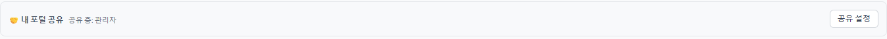
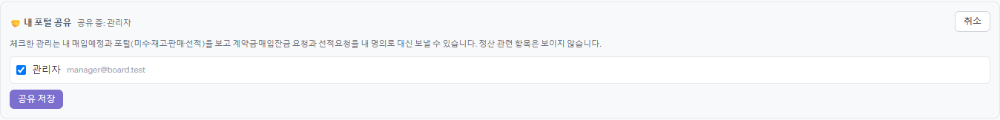
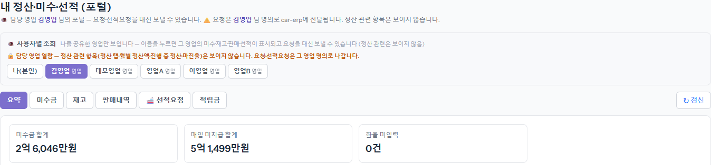
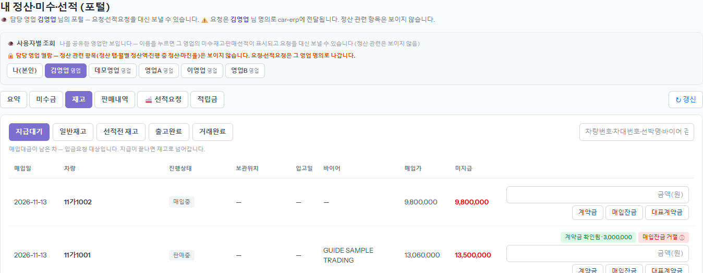

영업이 자리를 비울 때 관리가 대신 내 차를 보고 요청을 보내 줄 수 있게 하는 설정입니다. 영업 본인이 포털에서 관리를 체크합니다. 체크한 관리는 내 매입예정과 포털(미수·재고·판매·선적)을 보고, 계약금·매입잔금 요청과 선적요청을 내 이름으로 보낼 수 있습니다. 정산은 보이지 않습니다.
「공유 중: 이름」에 지금 공유한 관리가 나옵니다. 아무도 없으면 「공유한 관리 없음」으로 보입니다.

관리 계정 목록이 나옵니다. 맡길 사람을 체크하고 [공유 저장]을 누르면 바로 적용됩니다. 그만 맡기려면 체크를 풀고 다시 [공유 저장]을 누릅니다.

나를 공유한 영업만 버튼으로 나옵니다. 이름을 누르면 그 영업의 포털이 열리고, 위에 「요청은 OO 님 명의로 car-erp에 전달됩니다」가 뜹니다. 정산 관련(정산내역 탭·정산 대기·월별 정산액·진행 중 정산·마진율)은 빠져 있습니다. [나(본인)]을 누르면 내 화면으로 돌아옵니다.

[재고]·[판매내역]·[선적요청]에서 영업 본인과 똑같이 계약금·매입잔금·대표계약금, 판매대금확인, 선적요청을 보낼 수 있습니다. 보낸 요청은 그 영업의 이름으로 ERP 에 들어가고 알림톡도 그 이름으로 나갑니다 — 보내기 전에 영업과 얘기하세요.
